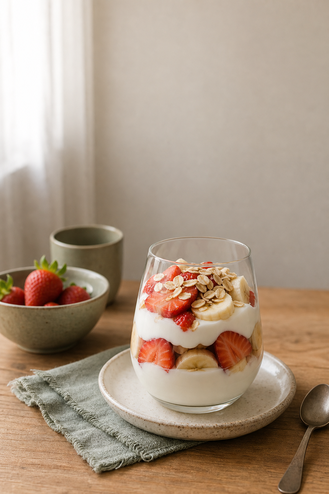
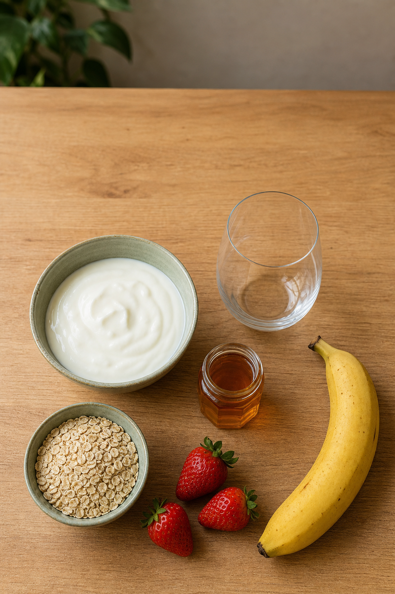
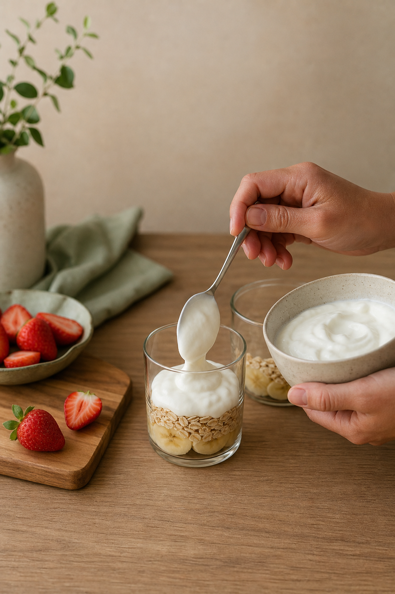

1/10
MITO OU VERDADE?
Lanche da tarde em
5 minutos
a troca do biscoito recheado
@saudesemsermao
2/10
✓ GUIA ALIMENTAR
Biscoito recheado é
ultraprocessado
O Guia Alimentar do Ministério da Saúde recomenda evitar ultraprocessados e preferir fruta e preparações feitas em casa.
Fonte: Guia Alimentar para a População Brasileira, 2014
@saudesemsermao
3/10
💬 PERGUNTA DO TITO
Mas biscoito é tão prático…
Esse lanche também é: 5 minutos e 4 ingredientes. Tem fruta, a fibra da aveia e a proteína do iogurte.
@saudesemsermao

4/10
Ingredientes
1 porção · 5 min
1 pote de iogurte natural (170 g)
1 banana
3 morangos (ou outra fruta)
2 colheres (sopa) de aveia
mel: opcional, só um fio
@saudesemsermao

5/10
1. Faça camadas
Aveia e banana no fundo do copo, iogurte natural por cima.
@saudesemsermao
6/10
2. Finalize
Morango e mais aveia por cima. Se quiser, um fio de mel.
@saudesemsermao
7/10
A
troca
🍪
Biscoito recheado
ultraprocessado
açúcar e gordura
pouca fibra
🥣
Copo do Tito
comida de verdade
fruta + aveia + iogurte
fibra e proteína
@saudesemsermao
8/10
💡 DICA DO TITO
Monta 3 copos à noite, sem a fruta, e guarda na geladeira.
De manhã é só pôr a fruta e levar. A aveia fica macia e o lanche já está pronto.
@saudesemsermao
9/10
📌 SALVA ESSE RESUMO
O lanche sem sermão
Biscoito recheado é ultraprocessado (Guia Alimentar)
Troca: iogurte natural + fruta + aveia
5 minutos, 4 ingredientes, sem fogão
Dá pra deixar 3 copos prontos na geladeira
@saudesemsermao
10/10
Manda pra quem vive de biscoito recheado 🍪
❤️
curte
💬
comenta "LANCHE"
🧡
segue
E comenta LANCHE se vai testar amanhã!
Conteúdo educativo, não substitui orientação profissional.
Imagens ilustrativas geradas com IA.
@saudesemsermao